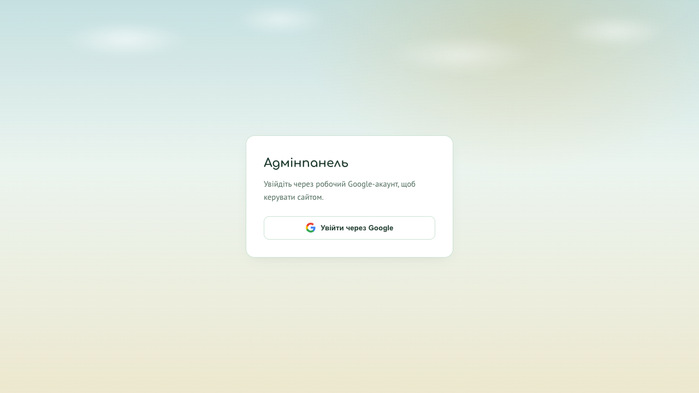

Як працювати з адмінпанеллю
Коротке візуальне керівництво для команди: від входу в систему до роботи з анкетами, розкладом і заявками.
Почніть за хвилину
Для щоденної роботи достатньо виконати три прості кроки.
- Відкрийте сторінку входу адмінпанелі та натисніть «Увійти через Google».
- На головній сторінці оберіть потрібну картку: «Анкети», «Розклад», «Заявки» або «AI помічник».
- Після завершення роботи натисніть «Вийти» у верхній панелі.

1Ролі та доступи
Картки на головній сторінці автоматично залежать від вашої ролі.
| Можливість | Інструктор | Адмін | Супер-адмін |
|---|---|---|---|
| Анкети, розклад, AI | ✓ | ✓ | ✓ |
| Перегляд заявок | ✓ | ✓ | ✓ |
| Позначення заявки опрацьованою | — | ✓ | ✓ |
| Керування користувачами | — | Перегляд | Повний доступ |
Розділи системи
Анкети
Пошук, перегляд, додавання, історія версій, CSV та PDF.
Розклад
Заняття по залах, спеціалістах і датах із автозбереженням.
Заявки
Телефонні звернення з сайту та їхній статус обробки.
Анкети батьків
Шукайте дитину за прізвищем або ім'ям батьків. Для нової анкети натисніть «Додати нову анкету». Повторне заповнення створює нову версію, а не стирає попередню.
Розклад залів
Оберіть дату, натисніть клітинку потрібного залу й часу, виберіть спеціаліста та дитину зі списку анкет. Зміни зберігаються автоматично.
Заявки на консультацію
Перевіряйте нові звернення за значком дзвіночка. Після дзвінка батькам натисніть «Позначити опрацьованою».
AI помічник
Оберіть «Аналіз анкет» або «Загальні питання». Чат не зберігається автоматично — для цього натисніть «Зберегти чат».
Безпека даних
Не діліться паролем
У кожного співробітника має бути власний обліковий запис.
Завершуйте сесію
Натискайте «Вийти» на спільному або робочому комп'ютері.
Перевіряйте AI
Висновки AI — допоміжний матеріал, а не фінальне рішення.
Часті запитання
Я не бачу потрібної картки. Це помилка?
Ні, картки залежать від ролі. Перевірте таблицю доступів вище.
Заявка є в системі, але email не прийшов
Заявка спочатку зберігається в адмінпанелі, а email надсилається окремо. Перевірте розділ «Заявки» та папку «Спам».
Дитина не знаходиться при створенні заняття
До розкладу можна додати лише дитину, для якої вже створена анкета.
Що робити, якщо сторінка повертає на вхід?
Сесія могла завершитися. Увійдіть знову; якщо проблема повторюється, зверніться до супер-адміна.